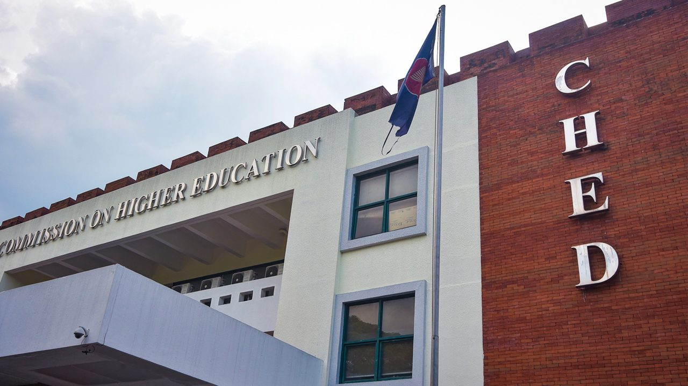
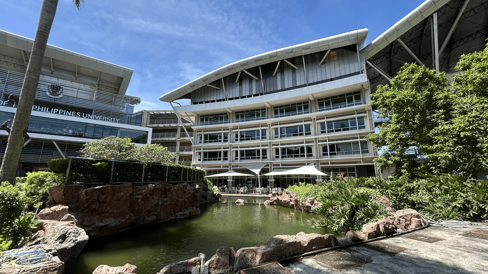
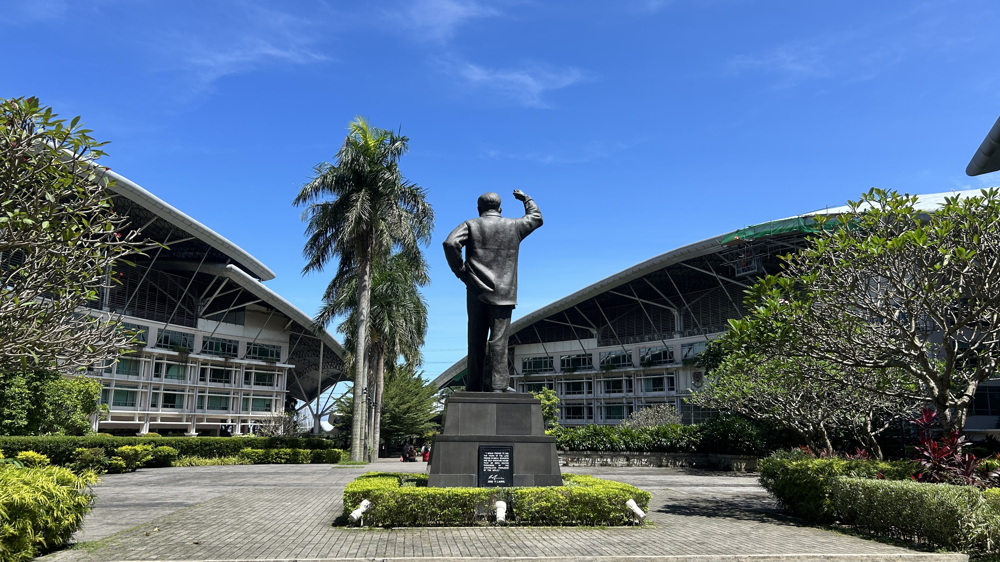
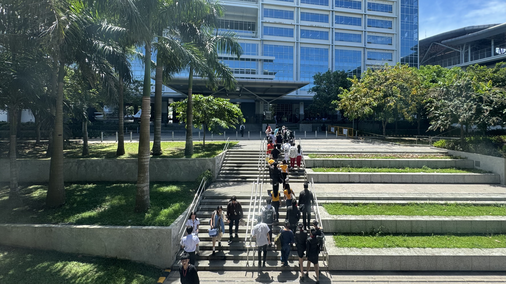

L
ABOUT US
Truth and fortitude, for God and country.
Lyceum of the Philippines University prides itself on its long and rich tradition of academic excellence through the legacy of its founder, Dr. Jose P. Laurel.
OUR LEGACY
The school Dr. Jose P. Laurel founded.
Lyceum of the Philippines University prides itself on its long and rich tradition of academic excellence through the legacy of its founder, Dr. Jose P. Laurel. The only Philippine President to have served in all three branches of the government, Dr. Laurel was a successful lawyer, legislator, constitutionalist, jurist, writer, scholar, statesman, philosopher, and above all things, educator.
With his admiration for knowledge and his appreciation of classical thought, Dr. Laurel named the school Lyceum of the Philippines after Lykeios, the site in ancient Athens where the great philosopher Aristotle nurtured the minds of his protégés.
“Veritas et Fortitudo, Pro Deo et Patria”
UNIVERSITY PROFILE
This is who we are.
Lyceum of the Philippines University – Cavite brings together students and educators in a collaborative learning environment. Through academic excellence, research, and innovation, the university encourages students to contribute to society and take an active role in nation-building.
Our 16-hectare campus is located in Cavite, a province known as the “Land of the Brave,” with a rich history, landmarks, museums, and leisure facilities. Our faculty members are leaders in their fields, passionate about teaching, and committed to advancing knowledge. With an average class size of 40, we foster a collaborative learning environment and meaningful student-faculty relationships.
Our alumni continue to make meaningful contributions to society as leaders and professionals in hospitality, law, nursing, business, engineering, and fine arts. Their achievements reflect the diverse opportunities and experiences that shape the Lycean community. We invite you to explore your future with LPU Cavite, guided by truth and fortitude, for God and country.
LPU Cavite received the Philippine Quality Award for Commitment to Quality Management.
The university is certified under ISO 9001:2015 and ISO 14001 for quality and environmental management systems by Societe Generale de Surveillance.

LPU is among the 71 universities in the Philippines granted Autonomous Status by the Commission on Higher Education (CHED).

Inspired by its founder, Dr. Jose P. Laurel, LPU upholds the values “Veritas et Fortitudo” (Truth and Fortitude) and “Pro Deo et Patria” (For God and Country).
GLOBAL RECOGNITION
Accreditations & rankings
These have all contributed to the global recognition of LPU Cavite. Explore the sources for more information.
- THE Impact Rankings Participant in Times Higher Education Global Impact Rankings
- ISO 21001:2018 Educational Organizations Management Systems
- QS Stars Awarded QS Four-Star Rating
- ISO 9001:2015 Quality Management Systems
- THE WURI World University Rankings for Innovation
- THE-ICE International Centre of Excellence in Tourism and Hospitality Education
- APIEM Awarded 5-Star Accreditation (2023)
- Investors in People Silver (2017) and Gold (2023) accreditations
OUR HISTORY
A legacy of learning and excellence.
Established in 2008, Lyceum of the Philippines University – Cavite carries forward the educational ideals of its founder, Dr. Jose P. Laurel. Since its opening, the university has continued to develop its academic programs, strengthen its industry partnerships, and provide students with opportunities for learning and professional growth.

CORE VALUES
LPU ‘N JPL
P
Probity
U
Unity
N
Nationalism
J
Justice
P
Pro-environment
L
Leadership
WHAT GUIDES US
Vision and Mission

Vision
An internationally accredited university by 2030, dedicated to innovation and excellence in the service of God and country.
Mission
The Lyceum of the Philippines University, espousing the ideals of Jose P. Laurel, is committed to the following missions:
- Instruction: Provide industry-based knowledge and skills
- Research: Undertake multi-disciplinary research
- Community Engagement: Support community engagement and social responsibility
- Institutional Development: Establish local and international linkages
- Sustainability: Produce sustainability advocates for global action
EDUCATIONAL PHILOSOPHY
Developing the whole person.
Inspired by the founding ideals of “Veritas et Fortitudo” (Truth and Fortitude) and “Pro Deo et Patria” (For God and Country) of former Philippine President Jose P. Laurel, Lyceum of the Philippines University Cavite promotes outcome-based education based on a mostly progressive philosophy. Through learning-centered and experiential approaches, enriched by industry partnerships and international linkages, students cultivate critical thinking and problem-solving skills.
Lycean education also focuses on developing the whole person, helping people become values-driven, socially responsible, creative, collaborative, and skilled individuals and leaders who can make a meaningful contribution to national development and global sustainability.
EDUCATIONAL ORGANIZATION POLICY
Committed to quality and continuous improvement.
Lyceum of the Philippines University Cavite is dedicated to forming world-class professionals, lifelong learners, and integral leaders. Our commitment extends to satisfying all applicable requirements, fostering a culture of continual improvement, and effectively managing intellectual property. We achieve this through the provision of quality research, instruction, community extension, and support services. Our pursuit of institutional development is guided by innovative and excellent educational organization management systems.
OBJECTIVES
Educational Organization Objectives
In implementing the educational organization policy, Lyceum of the Philippines University Cavite shall:
- Proactively FOCUS ON LEARNERS AND OTHER BENEFICIARIES through the engagement of interpersonal skills and work productivity in multidisciplinary, multicultural, and diverse teams.
- Develop learners' VISIONARY LEADERSHIP to become innovative leaders with an inquisitive mind in looking for opportunities to reflect and apply new knowledge and skills in a positive, sustainable way through research and project studies.
- Enact ENGAGEMENT OF PEOPLE in educational processes through planning and implementation.
- Employ a PROCESS APPROACH to embody lifelong learning strategies, leadership characteristics, and practical skills for one's life and survival.
- Facilitate CONTINUAL IMPROVEMENT of quality education through a responsive and relevant feedback mechanism via local and international quality assurance programs.
- Show good decision-making skills through critical thinking by weighing situations clearly and scrutinizing concerns and challenges with a rational and EVIDENCE-BASED DECISION AND APPROACH.
- Foster RELATIONSHIP MANAGEMENT with university stakeholders.
- Implement SOCIAL RESPONSIBILITY through the demonstration and application of values-driven principles, ethical decision-making, and sustainability.
- Provide educational ACCESSIBILITY AND EQUITY through various programs and activities.
- Carry out ETHICAL CONDUCT in educational programs and learning processes.
- Implement DATA SECURITY AND PROTECTION mechanisms through strict adherence to government and other regulatory bodies' policies, standards, and guidelines.

President, Lyceum of the Philippines University (Manila and Cavite)
LEADERSHIP
University Officials
Board of Trustees
- Ms. Lorna P. LaurelChairman Emeritus
- Atty. Roberto P. LaurelMember
- Dr. Peter P. LaurelMember
- Ms. Sarah L. LopezMember
- Mr. Carlos P. LaurelMember
- Ms. Josefina P. LaurelMember
- Mr. Antonio Jose Q. PeriquetMember
- Atty. Luis Marcos P. LaurelMember
- Mr. Arthur TanMember
Academic and Administrative Officials
Executives
- Atty. Roberto P. LaurelUniversity President
- Ms. Sarah L. LopezSenior Vice President for Finance and Treasurer
- Dr. Maria Teresa O. PilapilVice President for Administration
- Dr. Mark Irvin C. CelisVice President for Academic Affairs
- Mr. Bryan V. San LuisVice President for Finance
Academic Officials
- Dr. Arnel M. AvelinoDean of the College of Engineering and Architecture
- Mr. Joven B. CajigasDean of the College of Information Technology and Computer Science
- Dr. Ramon C. ManiagoDean of the Claro M. Recto Academy of Advanced Studies
- Atty. Ma. Soledad D. MawisDean of the College of Law
- Dr. Catherine CababaDean of the College of Allied Medical Sciences
- Dr. Ma. Cecilia O. QuibelDean of the College of Nursing
- Mr. Javier Antonio G. LaurelDean of the College of Fine Arts and Design
- Dr. Mary Grace BericoDean of the College of Business Administration
- Dr. Ivan BartolataDean of the College of International Tourism and Hospitality Management
- Dr. Maridette Joyce MarananDean of the College of Liberal Arts and Education
- Mr. Mhar Angelo BayotHeadmaster
- Dr. Elmer C. MatelDirector, Center for Lifelong Learning and Continuing Education
- Ms. Raizza P. CorpuzDirector of Center for Student and Cultural Affairs
- Ms. Kimberly Joy E. AlcarazHead of Center for Research and Development
WHY CHOOSE LPU
A community rooted in purpose.

Welcome to the Lyceum of the Philippines University (LPU), one of the country's leading institutions for higher learning and research. At LPU, we take pride in striving for excellence through the creation, preservation, transfer and application of knowledge. We offer a unique educational experience that prepares the next generation of global citizens to lead and make a difference in the world. At LPU, every student is immersed in dynamic learning that is fuelled by research-inspired insights and personalized, hands-on experiences that bring learning out of the classroom and into the world.
The University draws a vibrant and diverse community of exceptional students, faculty, alumni, and professionals dedicated to real-world applications of research, scholarship, faith, and service.
At LPU, you will discover a community rooted in purpose, guided by our founding values, poised to lead in education and research in the 21st century.
HAVE QUESTIONS?